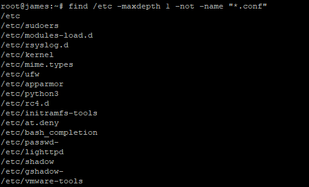

The Linux find command comes in handy when looking for files directly from the command line. The find command is given search criteria such as permissions, ownership, modification, size, time, and date among others to locate the file or directory in question.
The find command is available in all Linux distros by default, therefore, there’s no need of installing special packages to use it. Due to its significance, the find command is an essential command to learn if you want to know more about the command line navigations on any Linux distribution.
We will highlight some of the find command examples and explain the various options that you can use.
Syntax
1 | $ find location comparison-criteria search-term |
Listing files in the current directory
To list all files in a directory including files inside folders, run the command below.1
$ find .
Sample output
Searching files within a specified directory
If you want to search all files in a given directory, use the find command as follows
1 | $ find directory_name |
For example, to search for all files in /boot execute the command1
$ find /boot
Sample output
Searching files using the filename within a specified directory
If you want to specify the search criteria using the name of the file in a directory, the syntax will be as follows1
$ find directory_name -name "file_name"
For example, to search for Apache2 files in /etc directory run1
$ find /etc -name "apache2"
Output
Recursively find all files with a specified file extension
If you want to search for particular files bearing a specific extension, in a given directory, the syntax will be as follows1
$ find directory_name -name "*.extension"
For example, to search for all configuration files (.conf) in /etc directory, execute1
$ find /etc -name "*.conf"
Sample output
Limiting depth of search
You can decide to limit the depth of your file search in directories. For example, if you want to limit your file search to the first level of the directory, the syntax will be
1 | $ find directory_name -maxdepth 1 -name "*.conf" |
So, if you want to limit the file search to the first level directory in /etc for files with .conf extension execute:1
$ find /etc -maxdepth 1 -name "*.conf"
Sample output
As seen in the output above, the file search is limited to the /etc directory level. If you want to perform a more intensive search and go deeper within other directories within the /etc directory, increase the maxdepth value.
For instance, to search for files with .conf extension up to the 3rd directory run
1 | $ find /etc -maxdepth 3 -name "*.conf" |
Sample output
As seen from the above output, the search goes up to the 2nd and 3rd directories.
Invert search results
You can also search for files that do not meet given criteria with the find command. This mode is helpful when you want to eliminate known files from the search pattern.
To do this, use the -not -name attribute as shown
1 | $ find /etc -maxdepth 1 -not -name "*.conf" |
Sample output

The above output prints all the files that do not have the .conf fie extension.
Using find with OR operator
You can choose to combine search results with find by using the OR operator which is symbolized by -o flag shown in the example below
1 | $ find /etc -maxdepth 3 -name "cron" -o -name "ssh" |
The above command searches for files bearing the name ssh OR cron in the /etc directory
Searching for files only or directories only
If you want to search for files only, use the - type f attribute as shown in the example below1
$ find /etc -type f -name "ssh"
Sample output
If you want to search for directories only, use the - type d attribute as shown in the example below.
1 | $ find /etc -type d -name "ssh" |
Sample output
Searching for files owned by a particular user
To search for files owned by a particular user in a specific directory, use the syntax:1
$ find /path -user username
For instance, to find files owned by user james in /home directory run the command below1
$ find /home -user james
Sample output
Searching for files with certain file permissions
To search for files with specific file permissions, use the syntax below
1 | $ find /directory_name -type f -perm value |
For example, to search for files with permissions 755 in /etc directory, run:1
$ find /etc -type f -perm 755
Sample output
Searching for files with certain files sizes or a range of files
Linux find command also offers users a chance to search files according to their file sizes.
Search files of N size
For example, to search for files which are 10kb run:1
$ find /etc -type f -size 10k
Sample output
To search files greater than 10kb run
1 | find /etc -type f -size +10k |
Sample output
To search files less than 10kb run1
find /etc -type f -size -10k
Sample output
Summary
That was a quick overview of the Linux find command examples. As already shown searching files and directories on the command line is very easy. Knowing how the command operates is an essential tool for all system administrators.
Feel free to try out the above find command examples and let us know how it went.